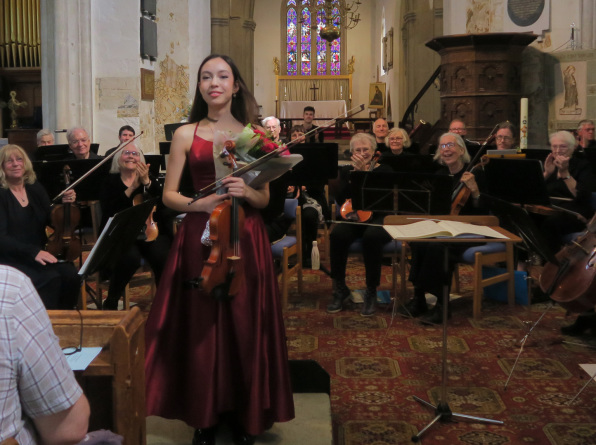

The Axe Vale orchestra was founded in 2005 and brings together amateur and professional players from East Devon, West Dorset and South Somerset. Our concerts include solo concerti, symphonies, orchestral suites and vocal pieces.

We give 3 concerts a year in East Devon and rehearse for 5 weeks before each one. We have performed with Axminster's twin town in Normandy, both in Normandy and in Devon, and members also play for local events.
We are always happy to welcome new members and Friends of the Orchestra.
If you would like to join or receive regular information about activities of the orchestra please let us know us by using our contact form.
The Axe Vale Orchestra is a full Chamber Orchestra consisting of Strings, full Woodwind and Brass Sections who meet to perform and explore full classical and modern repertoires.
Patrons: Celia Nicklin FRAM and Lionel Handy FRAM